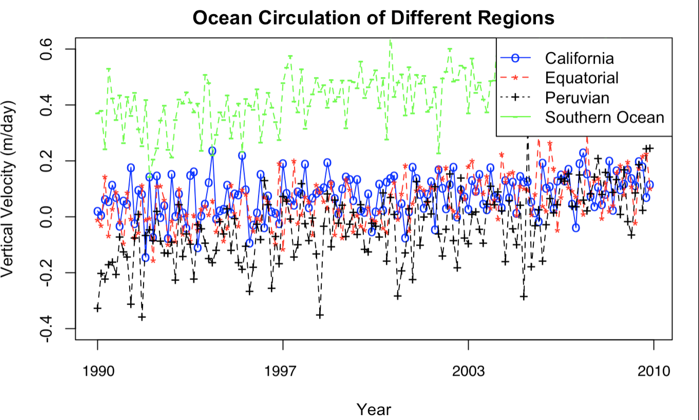

Total amount of electoral votes; amount each party has out of total
Each state represents which party the electoral votes would go to
Each electoral vote box represents one electoral vote for either party
Channels
Color
State electoral votes representative of corresponding party (red = republican, blue = democratic, red and blue stripes = mixed state)
This is a good choice, as these colors are already associated with the party, and the mixed value makes more sense than a blended color (i.e. purple).
Shape
Shape of each dataset is representative of state shape on US map
Electoral Votes are represented as squares
These are both good choices, as states are representative of the data, so it is intuitive. Squares for the electoral votes differentiate it from total state votes and are a safe choice.
Colormap(s)
Categorical: Red for republican, Blue for democrat, Red & Blue for mixed state
This is a good choice, as divergent would show the ratio of democratic and republican votes, which is not a good representation of the electoral college system (all or nothing). Additionally, sequential would is used when there is only one phenomenon being studied, which is not the case for this dataset.
Marks
Points
Channels
Color
Color is representative of scoring value
This is a good choice, as it makes it easy to see if the score is above/below average, without having to know a lot about baseball.
Position
Both horizontal and vertical: exit velocity and launch angle
This is a good choice, as both axes affect the scoring value; vertical more-so than launch angle.
Colormap(s)
Divergent: Color goes from cool to warm with an increase in scoring value
This is a good choice, as sequential shows the amount of a phenomenon, but this dataset is comparing the extremes (above and below average scoring values). Additionally, there are not different categories for scoring values, so it doesn't make sense to use a categorical color map.
Divergent: Average scoring value is a neautral color with above-Average
being a more saturated orange and below-average being more saturated purple.

Marks
Points
Channels
Color
Hue: Red, Green, Blue, Black; each color represents a different dataset
This is a good choice, as it clarifies the different datasets even when the points overlap.
Position
Both horizontal and vertical based on amount of upwelling and date
This is a good choice, as it is an essential part of the data to see the velocity change overtime.
Shape
Circles, Dashes, Plusses, Asterisks; each shape represents a different dataset
This channel is fine on its own, but unnecessary when coupled with color, which does a better job. The point of the shapes is to represent a different dataset, but that is already covered by color, so it is redundant for the most part. It does make it slightly easier to see when the points are overlapped.
Colormap(s)
Categorical: each dataset has different color
This is a good choice, as divergent would show the extremes of a range, but the point of this visualization is to separate the four different categories. Additionally, sequential would is used when there is only one phenomenon being studied, which is not the case for this dataset.